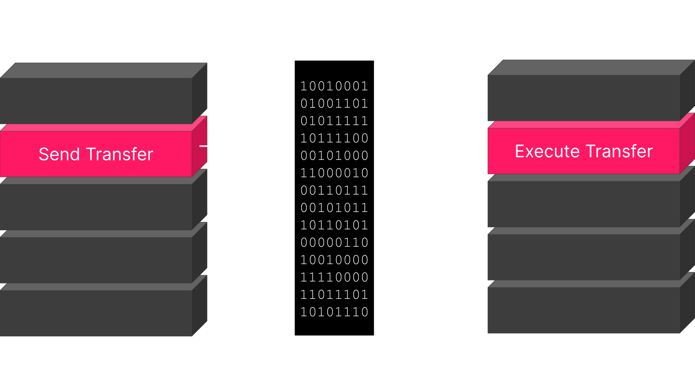
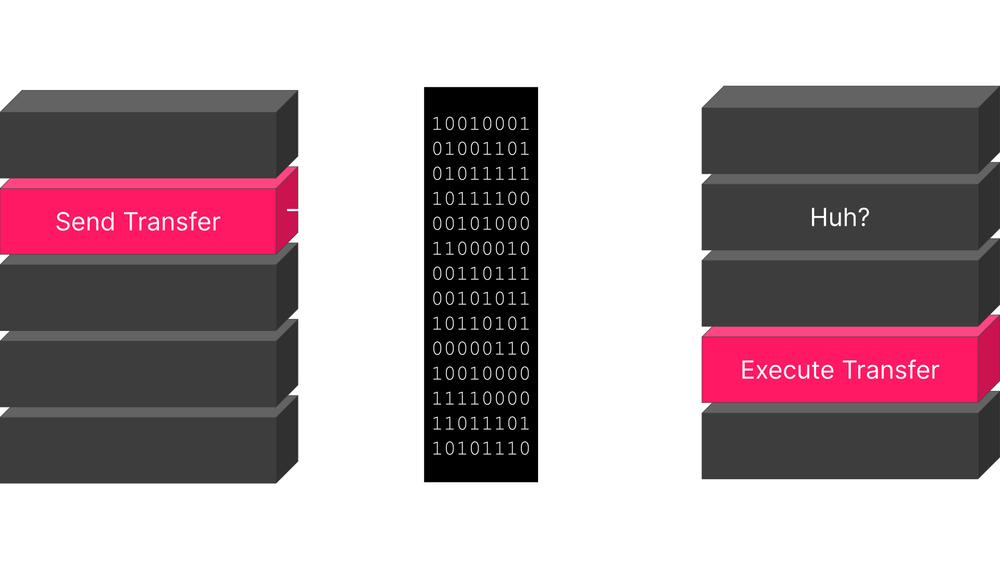
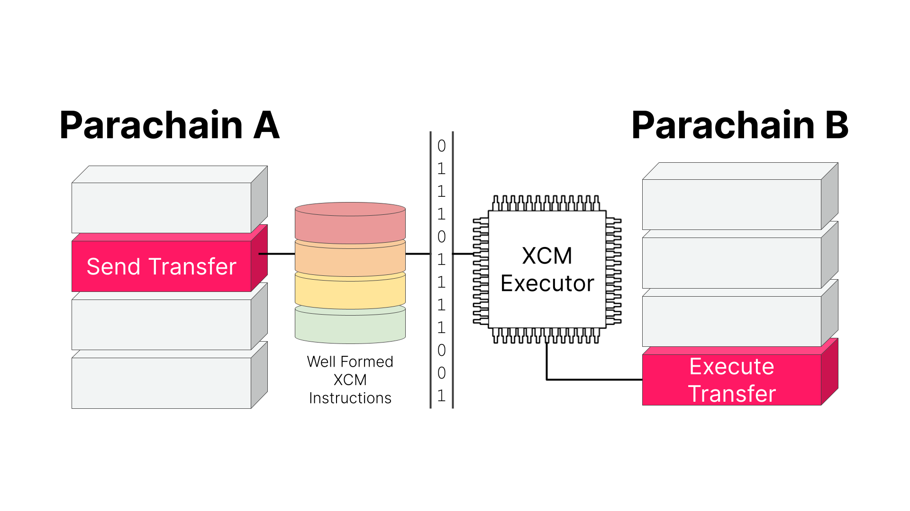

<!DOCTYPE html>
<html lang="en">

<head>
  <meta charset="utf-8" />
  <meta name="viewport" content="width=device-width, initial-scale=1.0, maximum-scale=1.0, user-scalable=no" />

  <title>Introduction to Cross Consensus Messaging (XCM)</title>
  <link rel="icon" href="./../../../assets/favicon.svg" />
  <link rel="shortcut icon" href="./../../../assets/favicon.png" />
  <link rel="stylesheet" href="./../../../dist/reset.css" />
  <link rel="stylesheet" href="./../../../dist/reveal.css" />
  <link rel="stylesheet" href="./../../.././assets/styles/PBA-theme.css" id="theme" />
  <link rel="stylesheet" href="./../../../css/highlight/shades-of-purple.css" />

  <link rel="stylesheet" href="./../../.././assets/styles/custom-classes.css" />

</head>

<body class="site">
  <header class="site-header">
    <!-- This logo is a link only on the watching server, not the production build -->
    <a href="">
      
    </a>
  </header>
  <main class="reveal">
    <article class="slides">
      <section ><section data-markdown><script type="text/template">

# Introduction to Cross-Consensus Messaging (XCM)

## _Core Concepts, Terms, and Logic_

<aside class="notes"><p><strong>Pre-requisites</strong></p>
<ul>
<li>FRAME (Storage Items, Dispatchables, Event, Errors, etc.)</li>
<li>Polkadot &amp; parachains conceptually</li>
<li>Assets (NFTs and fungibles)</li>
</ul>
</aside></script></section><section data-markdown><script type="text/template">
## _At the end of this lecture, you will be able to:_

<pba-flex center>

- Define the concepts, syntax, and terms of XCM
- Navigate existing resources that relate to XCM
- Differentiate between XCM and message-passing protocols like XCMP
</script></section></section><section ><section data-markdown><script type="text/template">
# Cross-chain use cases

Why would we want to perform operations on different blockchains?

<aside class="notes"><p>EXERCISE: ask the class to raise hands and postulate on generally what one might do.
We are expecting them to say transfers, but there are so many other things you could do, so many more problems worth solving with cross-chain:</p>
<ul>
<li>One contract calling another contract</li>
<li>Credential checking</li>
<li>Voting</li>
</ul>
</aside></script></section><section data-markdown><script type="text/template">
## 🎬 Some Concrete Use-cases

<pba-flex center>

- Cross-consensus asset transfers
- Execute platform-specific actions such as governance voting
- Enables single use-case chains
  - [Collectives](https://github.com/paritytech/cumulus/tree/master/parachains/runtimes/collectives)
  - Identity chains

<aside class="notes"><p>While the goal of XCM is to be general, flexible and future-proof, there are of course practical needs which it must address, not least the transfer of tokens between chains.
We need a way to reason about, and pay for, any required fees on the receiving CS.
Platform-specific action; for example, within a Substrate chain, it can be desirable to dispatch a remote call into one of its pallets to access a niche feature.
XCM enables a single chain to direct the actions of many other chains, which hides the complexity of multi-chain messaging behind an understandable and declarative API.</p>
</aside></script></section></section><section ><section data-markdown><script type="text/template">
> XCM is a **language** for communicating **intentions** between **consensus systems**.
</script></section><section data-markdown><script type="text/template">
### Consensus systems

A chain, contract or other global, encapsulated, state machine singleton.

<pba-flex center>

It does not even have to be a _distributed_ system, only that it can form _some_ kind of consensus.

<aside class="notes"><p>A consensus system does not necessarily have to be a blockchain or a smart contract.
It can be something that already exists in the Web 2.0 world, such as an EC2 instance in an AWS server.
XCM is Cross-Consensus since it&#39;s much more than cross chain.</p>
</aside></script></section><section data-markdown><script type="text/template">
### ✉️ A Format, not a Protocol

XCM is a **_messaging format_**.

It is akin to the post card from the post office.

It is _not_ a messaging protocol!

A post card doesn't send itself!

<aside class="notes"><p>It cannot be used to actually &quot;send&quot; any message between systems; its utility is only in expressing what should be done by the receiver.
Like many aspects core to Substrate, this separation of concerns empowers us to be far more generic and enable much more.
A post card relies on the postal service to get itself sent towards its receivers, and that is what a messaging protocol does.</p>
<p>The transport layer concerns itself with sending arbitrary blobs, it doesn&#39;t care about the format.
A common format has its benefits though, as we&#39;ll see next.</p>
</aside></script></section><section data-markdown><script type="text/template">
### Versioning

XCM is a **versioned** language.

It's currently in version 3.

What goes in each version is defined via an RFC process.
</script></section><section data-markdown><script type="text/template">
### Terminology: XCMs

**XCM**, Cross-Consensus Messaging, is the format.

**An XCM** is a Cross-Consensus Message.

It's not called an XCM message,

the same way it's not called an ATM machine.
</script></section></section><section ><section data-markdown><script type="text/template">
## 😬 Why not _native_ messages?

Drawbacks of relying on native messaging or transaction format:

<pba-flex center>

- Native message format changes from system to system, it also could change within the _same_ system, e.g. when upgrading it
- Common cross-consensus use-cases do not map one-to-one to a single transaction
- Different consensus systems have different assumptions e.g. fee payment

<aside class="notes"><ul>
<li>A system which intends to send messages to more than one destination would need to understand how to author a message for each.
On that note, even a single destination may alter its native transaction/message format over time.
Smart contracts might get upgrades, blockchains might introduce new features or alter existing ones and in doing so change their transaction format.</li>
<li>Special tricks may be required to withdraw funds, exchange them and then deposit the result all inside a single transaction.
Onward notifications of transfers, needed for a coherent reserve-asset framework, do not exist in chains unaware of others.
Some use-cases don&#39;t require accounts.</li>
<li>Some systems assume that fee payment had already been negotiated, while some do not.</li>
</ul>
<p>TODO: Why not just send EVM programs. Why XCVM instead of EVM?
Add Shawn&#39;s picture.
It&#39;s up to the interpreter to interpret the intention how it makes sense.</p>
</aside></script></section><section data-markdown><script type="text/template">
### Message format changes


</script></section><section data-markdown><script type="text/template">
### Message format changes


</script></section><section data-markdown><script type="text/template">
### Message format changes



<aside class="notes"><p>XCM abstracts away the actual on-chain operation that will be called, which lets the recipient redirect calls to always make them valid.</p>
</aside></script></section><section data-markdown><script type="text/template">
### No one-to-one mapping

<diagram class="mermaid limit size-50">
graph TD
    subgraph Message
        WithdrawAsset(WithdrawAsset)-->DepositAlice("DepositAsset(Alice)")
        DepositAlice-->DepositBob("DepositAsset(Bob)")
    end
</diagram>

<aside class="notes"><p>You might want to withdraw some assets and deposit some amount to one account and another to another.
Using transactions, you&#39;d have to send many messages to achieve this.</p>
</aside></script></section><section data-markdown><script type="text/template">
### Different assumptions

<diagram class="mermaid">
graph LR
    A(Chain A)--"Pays for fees"-->B(Chain B)
    A--"Doesn't pay for fees"-->C(Chain C)
</diagram>

<aside class="notes"><p>Different systems have different assumptions.
Using native messages, you&#39;d have to tailor your messages to all systems you want to message.</p>
</aside></script></section></section><section ><section data-markdown><script type="text/template">
## Four 'A's

XCM assumes the following things from the underlying environment.

<pba-flex center>

- **Agnostic**
- **Absolute**
- **Asynchronous**
- **Asymmetric**

<aside class="notes"><p>The 4 &#39;A&#39;s are assumptions XCM makes over the transport protocol and overall the environment where these messages are sent and processed.</p>
</aside></script></section><section data-markdown><script type="text/template">
## Agnostic

XCM makes no assumptions about the nature of the Consensus System between which messages are being passed.

<aside class="notes"><p>XCM is not restricted to Polkadot, it&#39;s a language that can be used for communication between any systems.
For example, EVM-chains or Cosmos hubs.</p>
</aside></script></section><section data-markdown><script type="text/template">
## Absolute

XCM assumes that the environment guarantees delivery, interpretation, and ordering of messages.

<aside class="notes"><p>The message format does not do much about the message possibly not being delivered.
In IBC, for example, you factor in fallibility of the transport protocol into your messages.</p>
</aside></script></section><section data-markdown><script type="text/template">
## Asynchronous

XCMs crossing the barrier between a single consensus system cannot generally be synchronous.

XCM in no way assume that the sender will be blocking on messages.

<aside class="notes"><p>You can&#39;t just block execution in the middle of a block, it has to be asynchronous.
Different systems have different ways of tracking time.
No assumption of blocking for sender/receiver.</p>
<p>Generally, consensus systems are not designed to operate in sync with external systems.
They intrinsically need to have a uniform state to reason about and do not, by default, have the means to verify states of other consensus systems.
Thus, each consensus system cannot make any guarantees on the expected time required to deliver results; doing so haphazardly would cause the recipient to be blocked waiting for responses that are either late or would never be delivered, and one of the possible reasons for that would be an impending runtime upgrade that caused a change in how responses are delivered.</p>
</aside></script></section><section data-markdown><script type="text/template">
## Asymmetric

XCM doesn't assume there'll be messages flowing in the other direction.

If you want to send responses, you have to make it explicitly.

<aside class="notes"><p>There are no results or callbacks.
Any results must be separately communicated to the sender with an additional message.
The receiver side can and does handle errors, but the sender will not be notified, unless the error handler specifically tries to send back an XCM that makes some sort of XCM that notifies status back to the origin, but such an action should be considered as constructing a separate XCM for the sole purpose of reporting information, rather than an intrinsic functionality built into XCM.
XCM is a bit like REST.
XCMP is a bit like TCP/IP but not quite.
Analogies can often hurt more than they help.</p>
</aside></script></section></section><section ><section data-markdown><script type="text/template">
## 📍 Locations in XCM

<pba-flex center>

Before sending a message to another system, we need a way to address it.

<diagram class="mermaid">
graph LR
    Message(Message)
    Alice(Alice)--"?"-->Bob(Bob)
    Alice--"?"-->AssetHub(Asset Hub)
    Alice--"?"-->Pallet(Pallet)
    Alice--"?"-->SmartContract(Smart Contract)
</diagram>

<aside class="notes"><p>XCM defines a <code>Location</code> type that acts as a URL for consensus systems.</p>
<p>The <code>Location</code> type identifies any single <em>location</em> that exists within the world of consensus.
Representing a scalable multi-shard blockchain such as Polkadot, an ERC-20 asset account on a parachain, a smart contract on some chain, etc.
It is usually represented as a location <em>relative</em> to the current consensus system.
Relative locations are easier to handle due to the fact that the network structure can change.</p>
<p>Locations don&#39;t define the actual path to get there, just a way of addressing.</p>
</aside></script></section><section data-markdown><script type="text/template">
## Interior locations

> Given two consensus systems, A and B. A is **interior** to B if a state change in A implies a state change in B.

<aside class="notes"><p>An example, a smart contract in Ethereum would be interior to Ethereum itself.</p>
</aside></script></section><section data-markdown><script type="text/template">
## Location hierarchy

<diagram class="mermaid">
graph TD;
    Relay(Relay)-->A(Parachain A)
    Relay-->B(Parachain B)
    B-->Alice(Account A)
    B-->Bob(Account B)
    A-->Pallet(Pallet Contracts)
    Pallet-->SCA(Smart Contract A)
    Pallet-->SCB(Smart Contract B)
</diagram>

<aside class="notes"><p>Locations form a hierarchy using the interior relation.</p>
</aside></script></section><section data-markdown><script type="text/template">
## Location Representation

<pba-flex center>

```rust
struct Location {
    parents: u8,
    junctions: Junctions,
}
```

<div style="margin-bottom: 2rem;"></div>

```rust
enum Junction {
    Parachain(u32),
    AccountId32 { id: [u8; 32], network: Option<NetworkId> },
    PalletInstance(u8),
    GeneralIndex(u128),
    GlobalConsensus(NetworkId),
    ...
}
```

<aside class="notes"><p>Right now Junctions are limited to 8 because of stack space.
We also don&#39;t expect Junctions being more than 8 levels deep.</p>
<p>It&#39;s perfectly possible to create locations that don&#39;t point anywhere.</p>
</aside></script></section><section data-markdown><script type="text/template">
### Network Id

<pba-flex center>

```rust
enum NetworkId {
    ByGenesis([u8; 32]),
    ByFork { block_number: u64, block_hash: [u8; 32] },
    Polkadot,
    Kusama,
    Westend,
    Rococo,
    Wococo,
    Ethereum { chain_id: u64 },
    BitcoinCore,
    BitcoinCash,
}
```

</pba-col>

</pba-cols>

<aside class="notes"><p>Junctions are ways to descend the location hierarchy</p>
</aside></script></section><section data-markdown><script type="text/template">
## Text notation

<pba-flex center>

<pba-cols>

<pba-col>

```rust
Location {
    parents: 1,
    interior: Parachain(50)
}
```

</pba-col>
<pba-col>

-->

</pba-col>
<pba-col>

`../Parachain(50)`

</pba-col>

<aside class="notes"><p>This notation comes from an analogy to a file system.</p>
</aside></script></section><section data-markdown><script type="text/template">
## Universal Location

> The Universal Location is a **theoretical** location. It's the parent of all locations which generate their own consensus. It itself has no parents.
</script></section><section data-markdown><script type="text/template">
## Universal Location

<diagram class="mermaid limit size-50">
graph TD;
    UniversalLocation(Universal Location)-->Polkadot(Polkadot)
    UniversalLocation-->Kusama(Kusama)
    UniversalLocation-->Ethereum(Ethereum)
    UniversalLocation-->Bitcoin(Bitcoin)
</diagram>

<aside class="notes"><p>We can imagine a hypothetical location that contains all top-level consensus systems.</p>
</aside></script></section><section data-markdown><script type="text/template">
## Absolute locations

<pba-flex center>

```rust
pub type InteriorLocation = Junctions;
```

Sometimes, absolute locations are necessary, e.g. for bridges.

They don't have parents.

The first junction has to be a `GlobalConsensus`.

<aside class="notes"><p>To write an absolute location, we need to know our location relative to the Universal Location.</p>
</aside></script></section><section data-markdown><script type="text/template">
## What are `Location`s used for?

<pba-flex center>

- Addressing
- Origins
- Assets
- Fees
- Bridging
</script></section><section data-markdown><script type="text/template">
## Cross-Chain Origins

When a receiver gets an XCM, a `Location` specifies the sender.

This `Location` is _relative_ to the receiver.

Can be converted into a pallet origin in a FRAME runtime

Used for determining privileges during XCM execution.

<aside class="notes"><p>Reanchoring:</p>
<p>Since <code>Location</code>s are relative, when an XCM gets sent over to another chain, the origin location needs to be rewritten from the perspective of the receiver, before the XCM is sent to it.</p>
</aside></script></section></section><section ><section data-markdown><script type="text/template">
## Location Examples
</script></section><section data-markdown><script type="text/template">
### Sibling parachain

`../Parachain(1001)`

<diagram class="mermaid">
graph TD
    Polkadot(Polkadot)-->AssetHub("📍 AssetHub (1000)")
    Polkadot-->Collectives("Collectives (1001)")
</diagram>

<aside class="notes"><p>What does the location resolve to if evaluated on Parachain(1000)?</p>
</aside></script></section><section data-markdown><script type="text/template">
### Sibling parachain

`../Parachain(1001)`

<diagram class="mermaid">
graph TD
    Polkadot(Polkadot)-->AssetHub("📍 AssetHub (1000)")
    Polkadot-->Collectives("Collectives (1001)")
    AssetHub-->Polkadot
    linkStyle 0 opacity:0.3
    linkStyle 2 stroke-dasharray:5
</diagram>
</script></section><section data-markdown><script type="text/template">
### Parachain account

`Parachain(1000)/AccountId32(0x1234...cdef)`

<diagram class="mermaid">
graph TD
    Polkadot("📍 Polkadot")-->AssetHub("AssetHub (1000)")
    Polkadot-->Collectives("Collectives (1001)")
    AssetHub-->Account("AccountId32 (0x1234...cdef)")
</diagram>

<aside class="notes"><p>What does the location resolve to if evaluated on the relay chain?</p>
</aside></script></section><section data-markdown><script type="text/template">
### Parachain account

`Parachain(1000)/AccountId32(0x1234...cdef)`

<diagram class="mermaid">
graph TD
    Polkadot("📍 Polkadot")-->AssetHub("AssetHub (1000)")
    Polkadot-->Collectives("Collectives (1001)"):::disabled
    AssetHub-->Account("AccountId32 (0x1234...cdef)")
    linkStyle 1 opacity:0.3
    classDef disabled opacity:0.3
</diagram>
</script></section><section data-markdown><script type="text/template">
### Bridge

`../../GlobalConsensus(Kusama)/Parachain(1000)`

<diagram class="mermaid">
graph TD
    Universe(Universal Location)-->Polkadot(Polkadot)
    Universe-->Kusama(Kusama)
    Polkadot-->PolkaA("📍 Asset Hub (1000)")
    Polkadot-->PolkaB(Bridge Hub)
    PolkaA-->Alice(Alice)
    PolkaA-->AssetsPallet(Pallet Assets)
    AssetsPallet-->Asset(USDT)
    Kusama-->KusamaA("Asset Hub (1000)")
    Kusama-->KusamaB(Bridge Hub)
</diagram>

<aside class="notes"><p>Speak to an example of non-parachain multi-location that would use a bridge
XCM reasons about addressing (as in a postal address) that must include understanding where you are, not just where you are going!
This will be very powerful later on (Origins)</p>
</aside></script></section><section data-markdown><script type="text/template">
### Bridge

`../../GlobalConsensus(Kusama)/Parachain(1000)`

<diagram class="mermaid">
graph TD
    Universe(Universal Location)-->Polkadot(Polkadot)
    Universe-->Kusama(Kusama)
    Polkadot-->PolkaA("📍 Asset Hub (1000)")
    Polkadot-->PolkaB(Bridge Hub):::disabled
    PolkaA-->Alice(Alice):::disabled
    PolkaA-->AssetsPallet(Pallet Assets):::disabled
    AssetsPallet-->Asset(USDT):::disabled
    Kusama-->KusamA("Asset Hub (1000)")
    Kusama-->KusamB(Bridge Hub):::disabled
    PolkaA-->Polkadot
    Polkadot-->Universe
    linkStyle 0 opacity:0.3
    linkStyle 2 opacity:0.3
    linkStyle 3 opacity:0.3
    linkStyle 4 opacity:0.3
    linkStyle 5 opacity:0.3
    linkStyle 6 opacity:0.3
    linkStyle 8 opacity:0.3
    linkStyle 9 stroke-dasharray:5
    linkStyle 10 stroke-dasharray:5
    classDef disabled opacity:0.3
</diagram>

<aside class="notes"><p>Even with Bridge Hubs, the relative location is what you&#39;d expect.
Bridge Hubs are just a way for routing messages.
They are an implementation detail of the transport layer.</p>
</aside></script></section><section data-markdown><script type="text/template">
### Bridge (actual routing)

<diagram class="mermaid">
graph TD
    Universe(Universal Location):::disabled-->Polkadot(Polkadot):::disabled
    Universe-->Kusama(Kusama)
    Polkadot-->PolkaA("📍 Asset Hub (1000)")
    Polkadot-->PolkaB(Bridge Hub)
    PolkaA-->Alice(Alice):::disabled
    PolkaA-->AssetsPallet(Pallet Assets):::disabled
    AssetsPallet-->Asset(USDT):::disabled
    Kusama-->KusamB(Bridge Hub)
    Kusama-->KusamA("Asset Hub (1000)")
    PolkaA-->PolkaB
    PolkaB--"Bridge"-->KusamB
    KusamB-->Kusama
    linkStyle 0 opacity:0.3
    linkStyle 1 opacity:0.3
    linkStyle 2 opacity:0.3
    linkStyle 3 opacity:0.3
    linkStyle 4 opacity:0.3
    linkStyle 5 opacity:0.3
    linkStyle 6 opacity:0.3
    linkStyle 7 opacity:0.3
    linkStyle 11 stroke-dasharray:5
    classDef disabled opacity:0.3
</diagram>

<aside class="notes"><p>The actual message is routed through Bridge Hub.</p>
</aside></script></section></section><section ><section data-markdown><script type="text/template">
## Sovereign Accounts

Locations external to the local system can be represented by a local account.

We call this the **sovereign account** of that location.

They are a mapping from a `Location` to an account id.

<diagram class="mermaid">
graph TD
    Polkadot(Polkadot)-->A(A) & B(B)
    A-->Alice(Alice)
    B-->AliceSA("Alice's sovereign account")
</diagram>

<aside class="notes"><p>A sovereign account is an account on one system that is controlled by another on a different system.
A single account on a system can have multiple sovereign accounts on many other systems.
In this example, Alice is an account on AssetHub, and it controls a sovereign account on Collectives.</p>
<p>When transferring between consensus systems, the sovereign account is the one that gets the funds on the destination system.</p>
</aside></script></section><section data-markdown><script type="text/template">
## Sovereign Accounts again

<diagram class="mermaid">
graph TD
    Polkadot(Polkadot)-->A(A) & B(B)
    A-->Alice(Alice)
    B-->AliceSA("Alice's sovereign account")
    B-->ASA("Asset Hub's sovereign account")
    A-->BSA("Collective's sovereign account")
</diagram>
</script></section></section><section ><section data-markdown><script type="text/template">
<pba-col>

## 💰 Assets in XCM

Most messages will deal with assets in some way.

How do we address these assets?
</script></section><section data-markdown><script type="text/template">
### Asset Representation

```rust
struct Asset {
    pub id: AssetId,
    pub fun: Fungibility,
}

struct AssetId(Location); // <- We reuse the location!

enum Fungibility {
    Fungible(u128),
    NonFungible(AssetInstance),
}
```

<aside class="notes"><p>We use locations, which we&#39;ve already discussed, to refer to assets.</p>
<p>A Asset is composed of an asset ID and an enum representing the fungibility of the asset.
Asset IDs are the location that leads to the system that issues it, this can be just an index in an assets pallet, for example.</p>
<p>Assets can also either be fungible or non-fungible:
Fungible - each token of this asset has the same value as any other
NonFungible - each token of this asset is unique and cannot be seen as having the same value as any other token under this asset</p>
</aside></script></section><section data-markdown><script type="text/template">
### Asset filtering and wildcards

```rust
enum AssetFilter {
    Definite(Assets),
    Wild(WildAsset),
}

enum WildAsset {
    All,
    AllOf { id: AssetId, fun: WildFungibility },
    // Counted variants
}

enum WildFungibility {
    Fungible,
    NonFungible,
}
```

<aside class="notes"><p>Sometimes we don&#39;t want to specify an asset, but rather filter a collection of them.
In this case, we can either list all the assets we want or use a wildcard to select all of them.
In reality, it&#39;s better to use the counted variant of the wildcards, for benchmarking.</p>
</aside></script></section></section><section ><section data-markdown><script type="text/template">
## Reanchoring

How do different locations reference the same asset?

<diagram class="mermaid limit size-70">
graph TD
    Polkadot(Polkadot)-->AssetHub("Asset Hub (1000)")
    Polkadot-->BridgeHub("Bridge Hub (1002)")
    AssetHub-->Alice(Alice)
    AssetHub-->AssetsPallet(Pallet Assets)
    AssetsPallet-->Asset(USDT)
</diagram>

<aside class="notes"><p>Locations are relative, so they must be updated and rewritten when sent to another chain, for them to be interpreted correctly.</p>
<p>TODO: Move elsewhere.
Native tokens are referenced by the location to their system.</p>
</aside></script></section><section data-markdown><script type="text/template">
### USDT from Asset Hub

`PalletInstance(50)/GeneralIndex(1984)`

<diagram class="mermaid limit size-70">
graph TD
    Polkadot(Polkadot):::disabled-->AssetHub("📍 Asset Hub (1000)")
    Polkadot-->BridgeHub("Bridge Hub (1002)"):::disabled
    AssetHub-->Alice(Alice):::disabled
    AssetHub-->AssetsPallet(Pallet Assets)
    AssetsPallet-->Asset(USDT)
    linkStyle 0 opacity:0.3
    linkStyle 1 opacity:0.3
    linkStyle 2 opacity:0.3
    classDef disabled opacity:0.3
</diagram>
</script></section><section data-markdown><script type="text/template">
### USDT from Bridge Hub

`../Parachain(1000)/PalletInstance(50)/GeneralIndex(1984)`

<diagram class="mermaid limit size-70">
graph TD
    Polkadot(Polkadot)-->AssetHub("Asset Hub (1000)")
    Polkadot-->BridgeHub("📍 Bridge Hub (1002)")
    AssetHub-->Alice(Alice):::disabled
    AssetHub-->AssetsPallet(Pallet Assets)
    AssetsPallet-->Asset(USDT)
    BridgeHub-->Polkadot
    linkStyle 1 opacity:0.3
    linkStyle 2 opacity:0.3
    linkStyle 5 stroke-dasharray:5
    classDef disabled opacity:0.3
</diagram>
</script></section><section data-markdown><script type="text/template">
### Reanchoring to the rescue

<diagram class="mermaid">
graph LR
    subgraph OutgoingMessage[Outgoing message from Bridge Hub]
        USDTBridgeHub(USDT from Bridge Hub's perspective)
    end
    USDTBridgeHub--Reanchoring-->USDTAssetHub
    subgraph IncomingMessage[Incoming message in Asset Hub]
        USDTAssetHub(USDT from Asset Hub's perspective)
    end
</diagram>
</script></section></section><section ><section data-markdown><script type="text/template">
## 🤹 Cross-consensus transfers

<aside class="notes"><p>The two ways of transferring assets between consensus systems are teleports and reserve transfers.</p>
</aside></script></section><section data-markdown><script type="text/template">
### 1. Asset teleportation


<aside class="notes"><p>Teleportation works by burning the assets on the source chain and minting them on the destination chain.
This method is the simplest one, but requires a lot of trust, since failure to burn or mint on either side will affect the total issuance.</p>
</aside></script></section><section data-markdown><script type="text/template">
### 1.1. Example: System parachains?

<diagram class="mermaid">
graph LR
    BridgeHub(Bridge Hub)--"Trust"-->AssetHub(Asset Hub)
</diagram>
</script></section><section data-markdown><script type="text/template">
### 1.2. Example: Polkadot and Kusama?

<diagram class="mermaid">
graph LR
    Polkadot(Polkadot)--"No trust"-->Kusama(Kusama)
</diagram>
</script></section><section data-markdown><script type="text/template">
### 2. Reserve asset transfers


<aside class="notes"><p>Reserve asset transfers are more complicated, since they bring in a third actor called the reserve chain.
Chain A and B needn&#39;t trust each other, they only need to trust the reserve chain.
The reserve chain holds the real assets, A and B deal only with derivatives.
The transfer is made by burning derivatives from A, moving them from A&#39;s SA to B&#39;s SA in R, then minting on B.</p>
<p>In some cases, the sender, A, can also be the reserve for a particular asset, in which case the process is simplified, there&#39;s no burning of derivatives.
This usually happens with parachains&#39; native tokens.</p>
<p>You always trust the issuer of the token to not mint infinite tokens.</p>
</aside></script></section><section data-markdown><script type="text/template">
### 2.1. Example: Parachain native tokens

<diagram class="mermaid">
graph LR
    subgraph A [A = R]
        Sender(Sender account)--"Move X real asset"-->BSovereignAccount(B's Sovereign Account)
    end
    A--"Mint X derivatives"-->B(B)
</diagram>

<aside class="notes"><p>Most parachains act as the reserve for their own token.
To transfer their token to other chains, they move the real assets to a sovereign account and then tell the chain to mint equivalent derivatives.</p>
</aside></script></section><section data-markdown><script type="text/template">
### 2.2. Example: Polkadot to Kusama

<diagram class="mermaid">
graph LR
    Polkadot(Polkadot)-->AssetHubP
    subgraph AssetHubP [Asset Hub Polkadot]
        Sender(Sender account)--"Move X real DOT"-->KusamaSovereignAccount("Kusama's sovereign account")
    end
    AssetHubP--"Mint X DOT derivatives"-->Kusama(Kusama)
</diagram>

<aside class="notes"><p>AssetHub Kusama acts as the reserve for KSM.
Kusama doesn&#39;t trust Polkadot to teleport KSM to it, but it does trust its own reserve, the AssetHub.
Polkadot has a sovereign account in Kusama&#39;s AssetHub with some amount of KSM.
Whenever some user in Polkadot wants to get KSM on Kusama, they just give the DOT to Polkadot and the KSM are moved from one sovereign account to another.
No new trust relationships are added.</p>
</aside></script></section></section><section ><section data-markdown><script type="text/template">
## Summary

- XCM
- XCM vs XCMP
- Locations
- Sovereign Accounts
- Assets
- Reanchoring
- Cross-consensus transfers
  - Teleports
  - Reserve asset transfers
</script></section><section data-markdown><script type="text/template">
## Next steps

<pba-flex center>

1. Blog series introducing XCM: Parts [1](https://medium.com/polkadot-network/xcm-the-cross-consensus-message-format-3b77b1373392), [2](https://medium.com/polkadot-network/xcm-part-ii-versioning-and-compatibility-b313fc257b83), and [3](https://medium.com/polkadot-network/xcm-part-iii-execution-and-error-management-ceb8155dd166).
2. XCM Format [repository](https://github.com/paritytech/xcm-format)
3. XCM [Docs](https://paritytech.github.io/xcm-docs/)
</script></section><section data-markdown><script type="text/template">
<figure>
    
    <figcaption>Source: <a href="https://polkadot.subscan.io/xcm_dashboard">Subscan</a></figcaption>
</figure>
</script></section></section>
    </article>
  </main>

  <script src="./../../../dist/reveal.js"></script>

  <script src="./../../../plugin/markdown/markdown.js"></script>
  <script src="./../../../plugin/highlight/highlight.js"></script>
  <script src="./../../../plugin/zoom/zoom.js"></script>
  <script src="./../../../plugin/notes/notes.js"></script>
  <script src="./../../../plugin/math/math.js"></script>

  <script src="./../../../assets/plugin/mermaid.js"></script>
  <script src="./../../../assets/plugin/mermaid-theme.js"></script>

  <script src="./../../../assets/plugin/chart/chart.js"></script>
  <script src="./../../../assets/plugin/chart/chart.min.js"></script>

  <script src="./../../../assets/plugin/tailwindcss.min.js"></script>

  <script>
    function extend() {
      var target = {};
      for (var i = 0; i < arguments.length; i++) {
        var source = arguments[i];
        for (var key in source) {
          if (source.hasOwnProperty(key)) {
            target[key] = source[key];
          }
        }
      }
      return target;
    }

    // default options to init reveal.js
    var defaultOptions = {
      controls: true,
      progress: true,
      history: true,
      center: true,
      transition: 'default', // none/fade/slide/convex/concave/zoom
      slideNumber: true,
      mermaid: {
        startOnLoad: false,
        logLevel: 3,
        theme: 'base',
        themeVariables: {
          primaryColor: purple,
          primaryTextColor: white,
          primaryBorderColor: pink,
          lineColor: pink,
          secondaryColor: lightPurple,
          tertiaryColor: lightPurple,
        },
      },
      chart: {
        defaults: {
          color: 'lightgray', // color of labels
          scale: {
            beginAtZero: true,
            ticks: { stepSize: 1 },
            grid: { color: "lightgray" }, // color of grid lines
          },
        },
        line: { borderColor: ["#ccc", "#E6007A", "#6D3AEE"], "borderDash": [[5, 10], [0, 0]] },
        bar: { backgroundColor: ["#ccc", "#E6007A", "#6D3AEE"] },
      },
      plugins: [
        RevealMarkdown,
        RevealHighlight,
        RevealZoom,
        RevealNotes,
        RevealMath,
        RevealMermaid,
        RevealChart
      ]
    };

    // options from URL query string
    var queryOptions = Reveal().getQueryHash() || {};

    var options = extend(defaultOptions, {"width":1400,"height":900,"margin":0,"minScale":0.2,"maxScale":2,"transition":"none","controls":true,"progress":true,"center":true,"slideNumber":true,"backgroundTransition":"fade"}, queryOptions);
  </script>


  <script>
    Reveal.initialize(options);
  </script>
</body>

</html>
